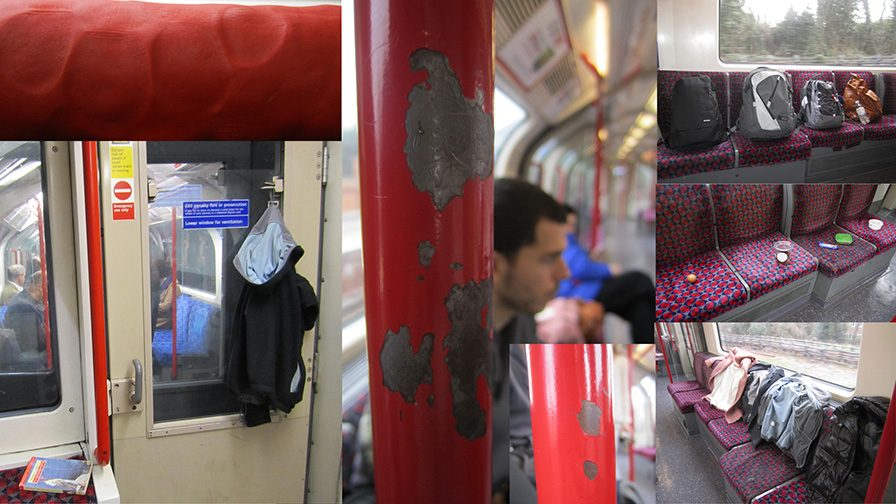
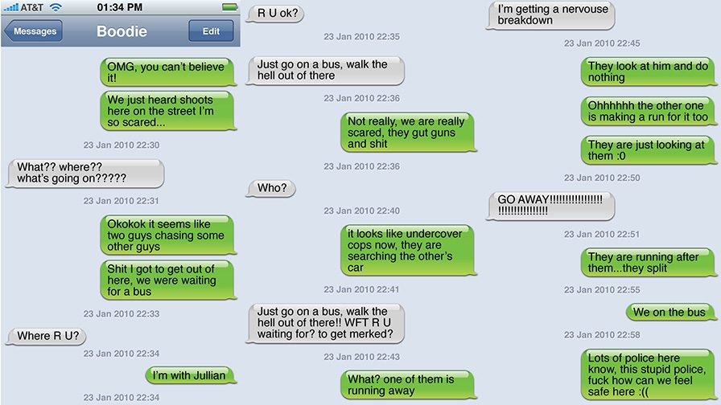
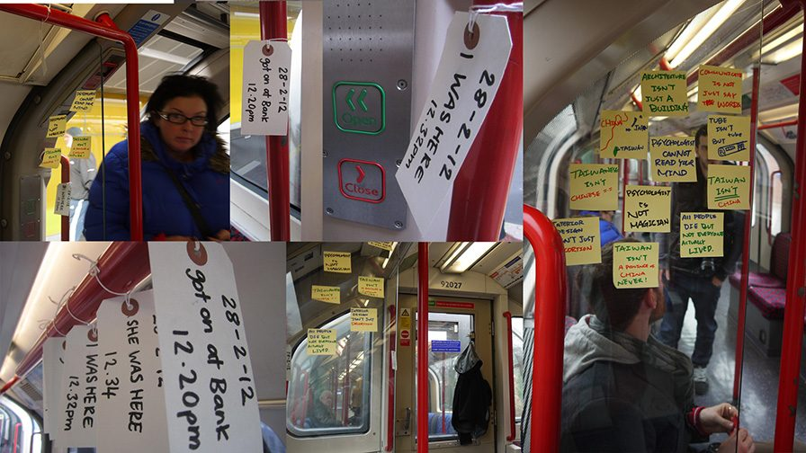
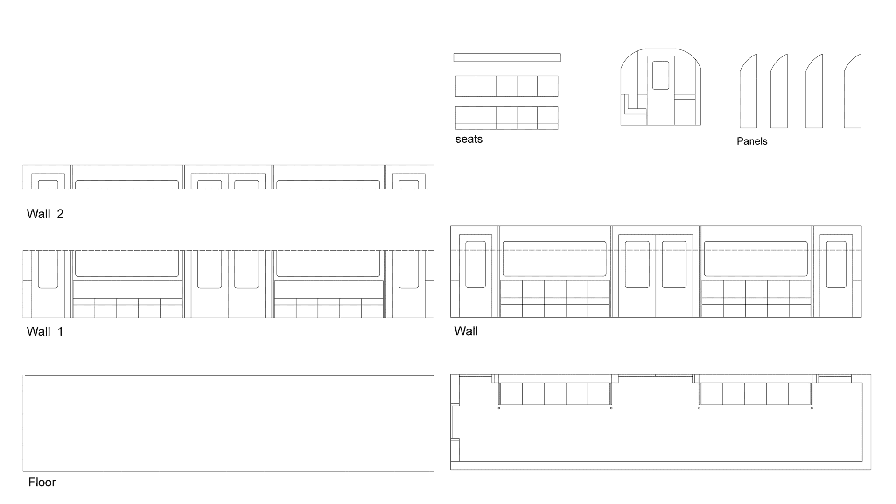
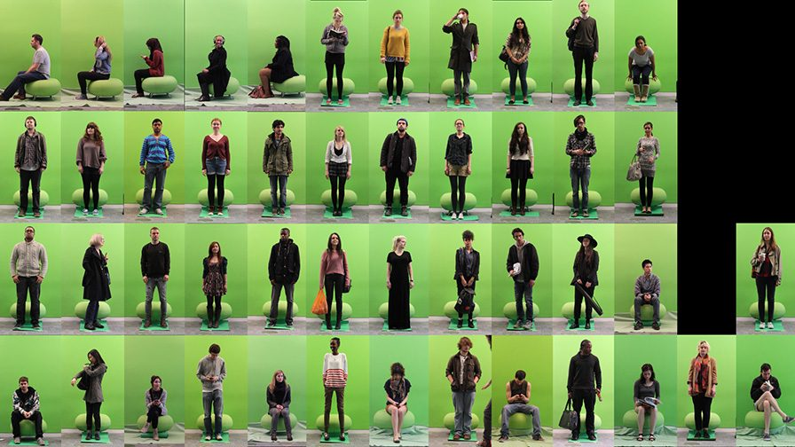
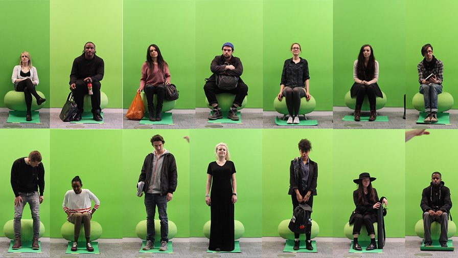
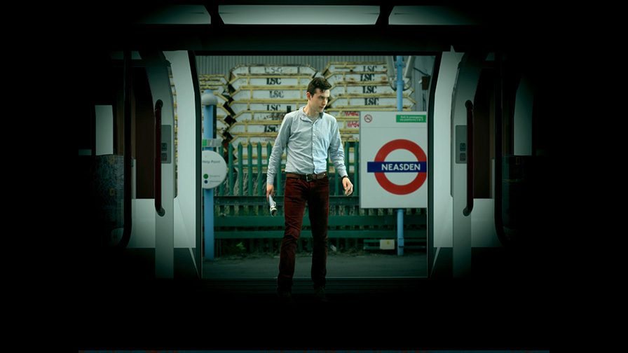
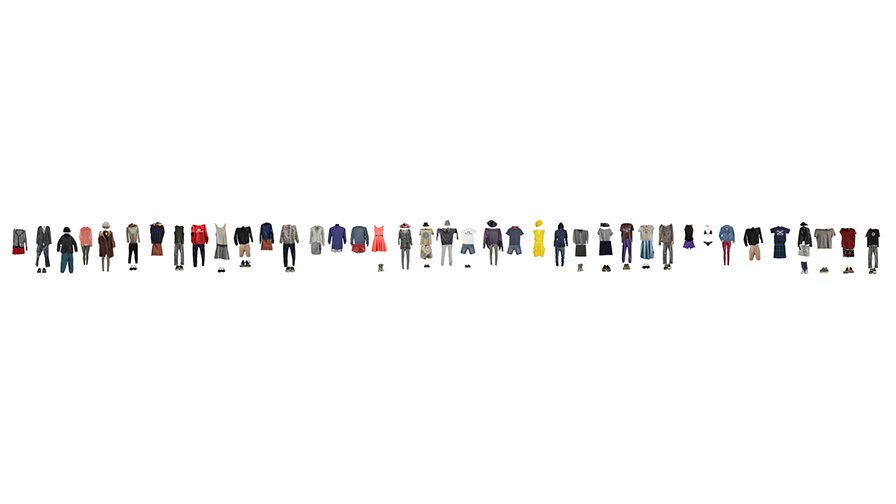
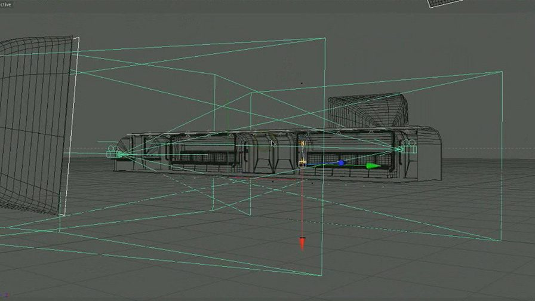
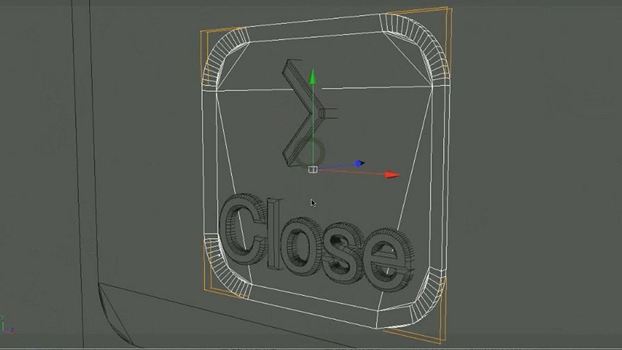
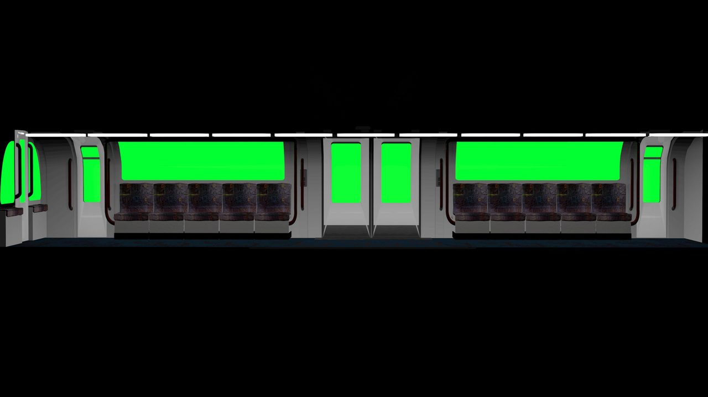
A Multidisciplinary design team based at Goldsmiths College, University of London. Designing for a field we are not familiar with can be like designing for the future we cannot see. Collaborative design invites and encourages discourse for ideas and imaginations coming together to bring about unprecedented possibility. Like matchmaking we’ll suggest a combination and…see what happens!
Ultimately the brief was tackled by each looking at the same program then realized through different projects, this allowed for each person’s individual goals to be achieved while answering to an overarching program. Individual experiments were undertaken in the chosen space, helping each other but for our own goals, however, later, when we summarized findings, we found we were borrowing concepts from each other and stepping out of our original framework of possibilities. Thus came a dual collaboration and two further projects within the group, a crossover of disciplines presenting a collection of possible outcomes for the future of underground travel.
The brief set by advertising agency ‘Bartle Bogle Hegarty’ (BBH) challenged designers to work together create a ‘new narrative’. By creating open narrative, users are given possibility and means to interact with and change the course of a tale. We tell stories to ourselves to create an atmosphere, to feel a certain way; to understand beliefs; to trust rumor and to play with myth. In response to the brief set, the group objective was to inject a new narrative into the public transportation network. The group used different technologies testing transportation to extremes of the imagination, consideration of the unknown, of existing public space with insurgent exploitation of physical and virtual media.
‘Transitors’ project imparts as a type of hacked future where underground users can recreate their surroundings and travel experience.
Identifying key words helped to take us into our individual pathway of research for the projects. Identity; time and transportation. Each project playing with and combining the others’ keywords to generate new design possibilities. Having recognized key themes amongst the group it was decided to project a social design, something for use in public space. The project aimed to offer meaning during this moment of ‘suspension’; to reveal and provide identity for anonymous travelers. Using people as data in the underground network, the program seeks to reveal the essence of the underground. By editing real life and hacking behavioral norms, ‘Transitors’ presents a series of outcomes created to tease, enhance, and question how we Use the underground transport system together.
A Collection of writing concerning narrative, technology and collaboration in design. 1. Collaborative collaboration as causality and teamwork as technology. Catalysts to create the impossible. ‘Is it OK to design design stuff that can’t yet work?’
Marion Lean – Textile Designer
Avi Asheknazi – Experience Designer.
Blair Francy – Meta Designer.
Jullian Li – Interior Designer.
Project finished on Merch, 2012
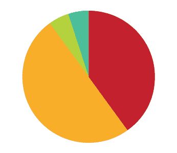
{kind=link}
{kind=link}